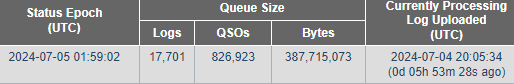

John,
We are now down to 3.7 million Qs! Maybe by weeks end we will be back
to normal!!
See attached graph:
73, and thanks,
Dave (NK7Z)
https://www.nk7z.net
ARRL Volunteer Examiner
ARRL Technical Specialist, RFI
ARRL Asst. Director, NW Division, Technical Resources
On 7/3/24 19:24, John Miller via Chat wrote:
> https://www.arrl.org/logbook-queue-status
> <https://www.arrl.org/logbook-queue-status>
>
> A slow game of catch-up, but at least the gap is closing.
>
> As Yogi Berra said, “You can observe a lot by just watching”.
>
> 73
> John, K6MM
_______________________________________________
Chat mailing list
Chat@ncdxc.org
http://mail.ncdxc.org/mailman/listinfo/chat_ncdxc.org